Portfolio · 화면 및 기능 소개
전국 공공기관의 금고 입찰 기회를 지도에서 발굴하고, 참여 여부를 결재로 확정한 뒤, 3개 팀(영업·전산·예산)이 AI 에이전트와 함께 제안서를 9단계로 완성하기까지를 한 화면에서 총괄 제어(orchestration)하는 시스템입니다. 인터넷이 없는 폐쇄망을 전제로 설계했습니다.
입찰 기회는 흩어져 있고, 참여 결정은 부서마다 따로 나며, 제안서는 여러 팀이 나눠 쓰다 보니 "배점표의 어떤 항목이 아직 비어 있는지"를 제출 직전에야 알게 됩니다. 이 시스템은 그 네 단계를 하나의 흐름으로 묶고, 각 단계에 사람의 결재 지점을 남겨 뒀습니다.
기관을 "찾는" 단계의 화면입니다. 지도 자체가 우선순위를 말하도록 만들었습니다.
전국 기관의 금고 입찰 임박도를 시도별 면 색으로 칠한 첫 화면 — 데이터가 아직 없는 지역은 빗금 '준비중'으로 구분합니다.
상단 흐름 띠(ticker)가 임박 TOP5를 D-day와 함께 흘려보내, 지도를 보지 않아도 급한 건이 먼저 눈에 들어옵니다.
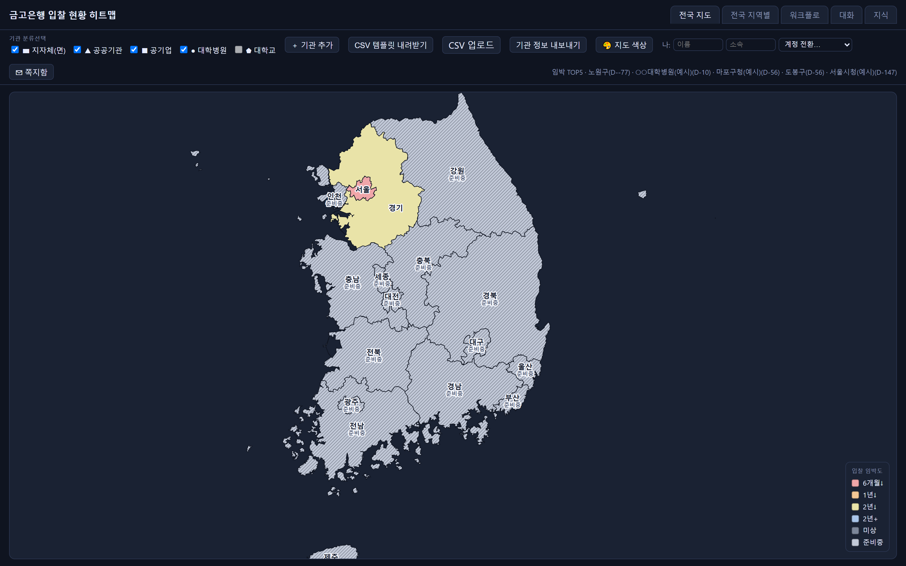
시도를 누르면 구·시군 면으로 확대되고, 오른쪽에 임박순 랭킹 패널이 함께 붙습니다.
입찰일이 공고로 확인된 곳은 확정, 주기로 계산한 곳은 추측으로 표시해 근거의 강도를 숨기지 않습니다.
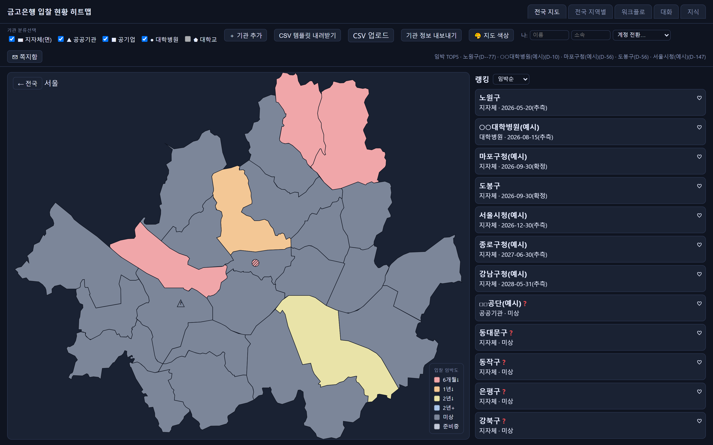
랭킹 카드에서 기관을 열어 입찰주기·입찰예상일·확정여부 등을 직접 고치고 서버에 저장합니다.
서버에 저장 경로가 없는 '기관명'은 입력 자체를 잠그고 이유를 라벨에 적었습니다 — 저장을 눌러도 아무 일이 없던 무음 실패를 없앤 부분입니다.
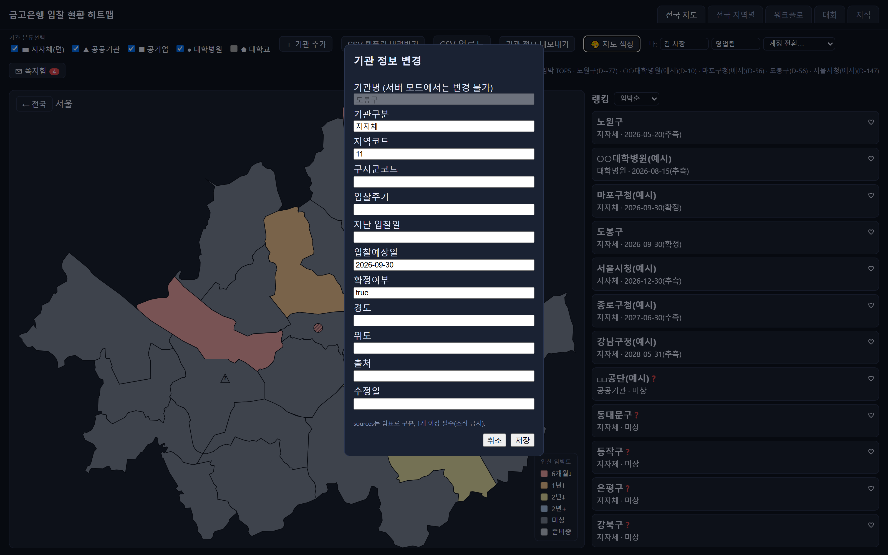
임박 단계별 면 색과 선택 강조색·강조 주기를 사용자가 직접 조절합니다.
설정은 브라우저에 남아 다음 접속에도 유지되며, 언제든 기본값으로 되돌릴 수 있습니다.
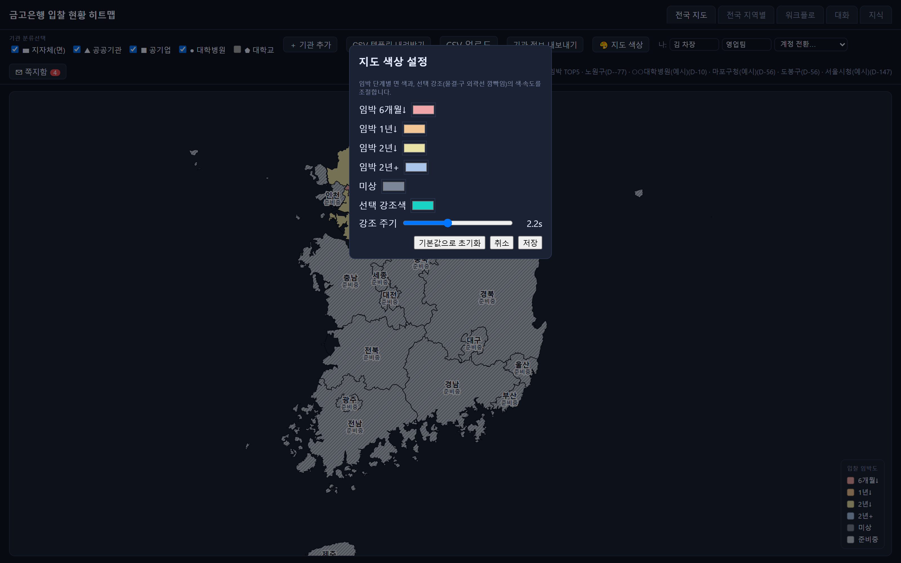
시스템의 심장부입니다. 오케스트레이터(LangGraph)가 3개 팀 에이전트를 병렬로 돌리되, 5·7·8단계에서 반드시 사람의 결재를 받고 멈춥니다.
참여 결정은 버튼 하나가 아니라 영업 → 전산 → 예산 3차 순차 결재이고, 3차까지 모여야 '참여확정'이 됩니다.
배점표 매핑 표가 평가항목별로 담당팀·작성상태(작성됨/미충족/미배정)·개인정보 검출 건수까지 한 줄로 보여줍니다.
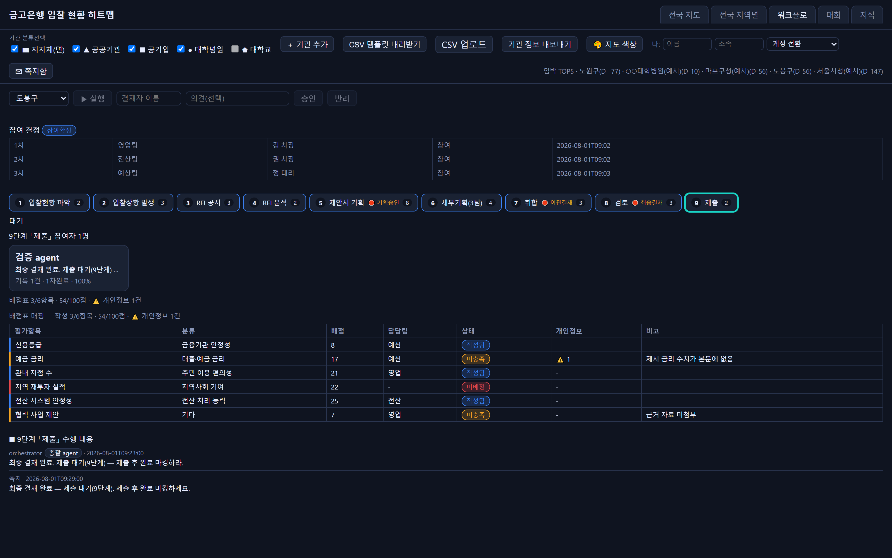
진행 표시줄에서 단계를 누르면 그 단계에 실제로 기록을 남긴 팀만 참여자 카드로 뜹니다(전체 팀 목록이 아닙니다).
아래에는 총괄의 지시와 각 팀의 보고가 오간 순서 그대로 펼쳐져, 그 단계에서 무슨 일이 있었는지 되짚을 수 있습니다.
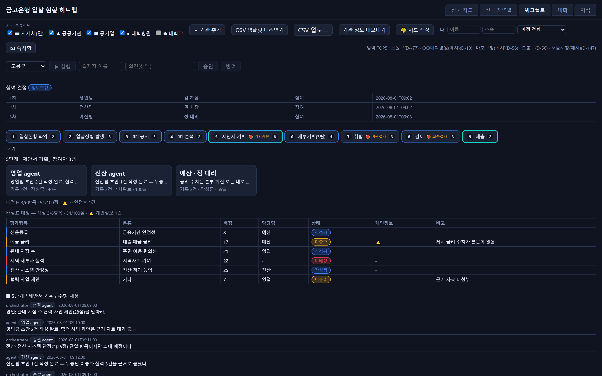
참여자 카드를 누르면 같은 자리가 그 팀 작업의 전체 지시·보고 로그로 바뀝니다.
사람(human)은 실명, 에이전트(agent)는 역할명으로 표기해 "누가 한 말인지"가 흐려지지 않게 했습니다.
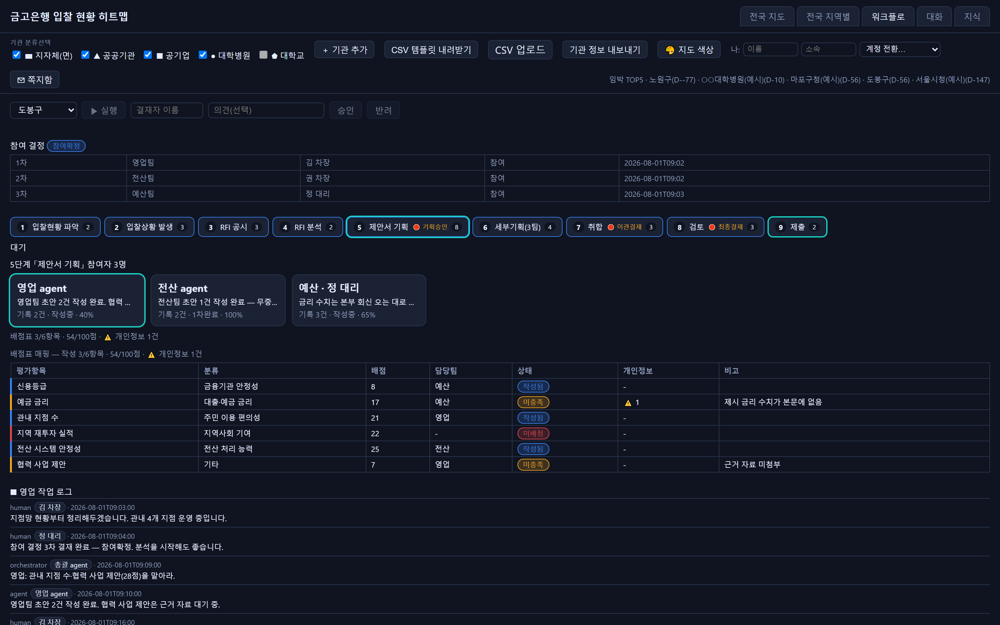
워크플로가 만들어 낸 알림을 종류별 색으로 모아 보여주고, 미읽음 건수를 상단 표식(badge)으로 셉니다.
수신자는 사람 이름과 소속(예: 영업팀) 양쪽으로 잡아, 역할 앞으로 온 결재요청도 놓치지 않습니다.
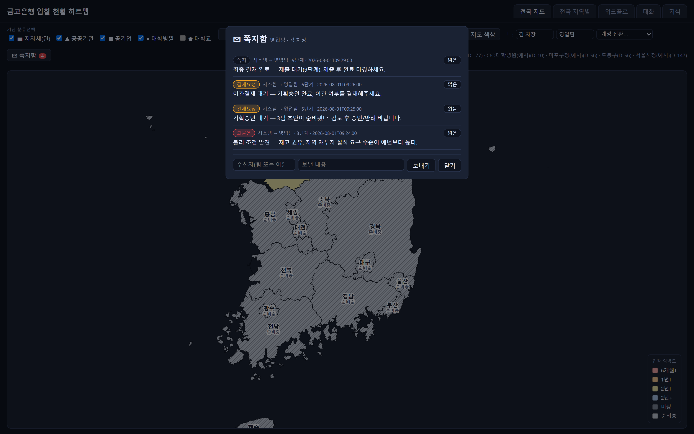
7단계 이관이 끝나면 디자이너 앞으로 이관 패키지가 열립니다. 팀별 작성물과 첨부 파일을 한자리에서 받아보고, 궁금하면 그 팀에 바로 문의합니다.
3개 팀이 전부 결재까지 끝나기 전에는 제출 버튼이 잠기고 그 사유가 문구로 뜹니다(화면뿐 아니라 서버에서도 막습니다).
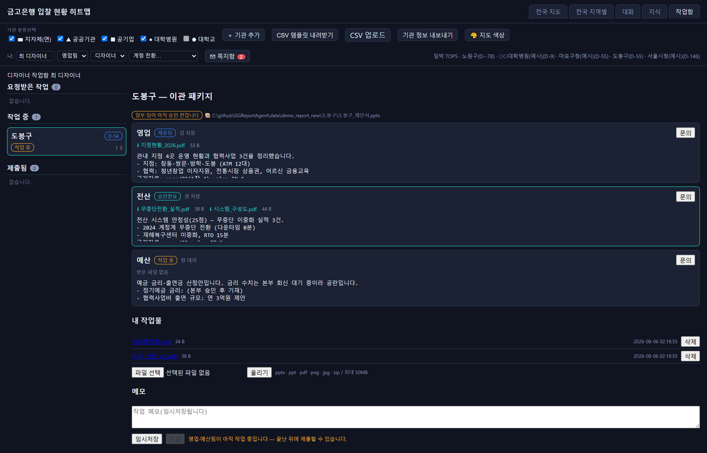
결재 라인은 팀원 → 그 팀의 팀장 → (3팀 승인) → 디자이너 → 영업팀장 → 영업부장입니다. 팀장은 남의 팀을 대신 결재하지 않습니다.
결재에 필요한 맥락(기관 · 단계 · 작성자 · 본문 · 첨부)이 카드 한 장 안에 다 있고, 반려하면 담당자에게 사유가 쪽지로 갑니다.
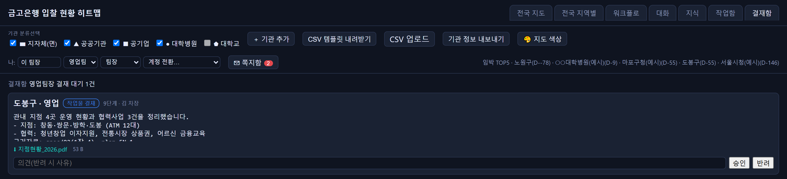
소속(영업팀 · 전산팀 · 예산팀)과 직책(팀원 · 팀장 · 부장 · 디자이너)의 조합마다 어느 탭을 보여줄지를 표에서 켜고 끕니다. 전산팀이 운영자를 겸합니다.
권한관리 자체를 모든 역할에서 끄는 저장은 거부합니다 — 한 번의 실수로 아무도 못 들어오는 상태가 되면 되돌릴 방법이 없기 때문입니다.
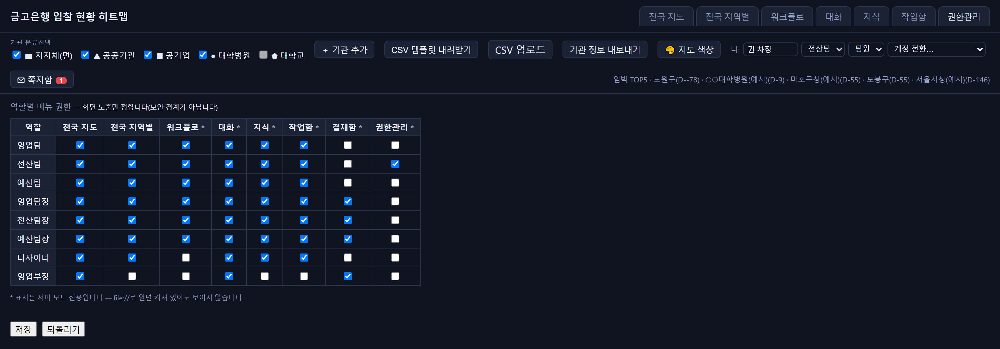
LLM은 폐쇄망 안에 두는 것을 전제로 붙였습니다. OpenAI 호환 엔드포인트면 주소만 바꿔 그대로 연결됩니다.
기관을 골라 참여 여부를 물으면 영업·전산·예산 3개 관점 + 종합 판단 + 리스크로 나눠 답하고, 이어지는 질문은 앞 대화를 맥락으로 받습니다.
상단 표식(badge)이 지금 답을 만드는 모델과 그 선택 근거를 밝힙니다: llama3.1:8b (자동 선택 · RAM 15.7GB / 8 vCPU).
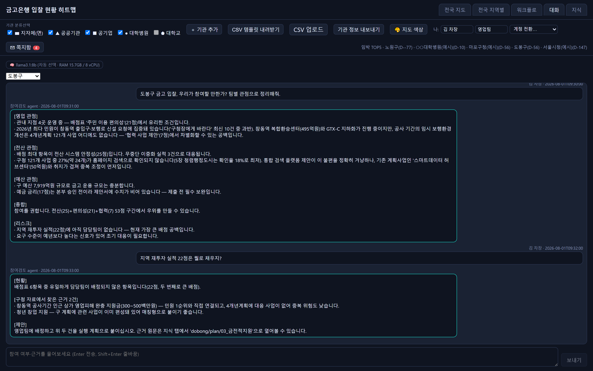
글자 검색(SQLite FTS5 trigram)과 뜻 검색(bge-m3 임베딩)을 RRF로 합쳐 항상 함께 돌립니다 — 척도가 다른 두 점수를 순위로만 합치는 방식입니다.
결과마다 어느 기관·어느 문서의 몇 번째 조각인지 출처를 달아, 제안서에 인용해도 추적이 끊기지 않습니다.
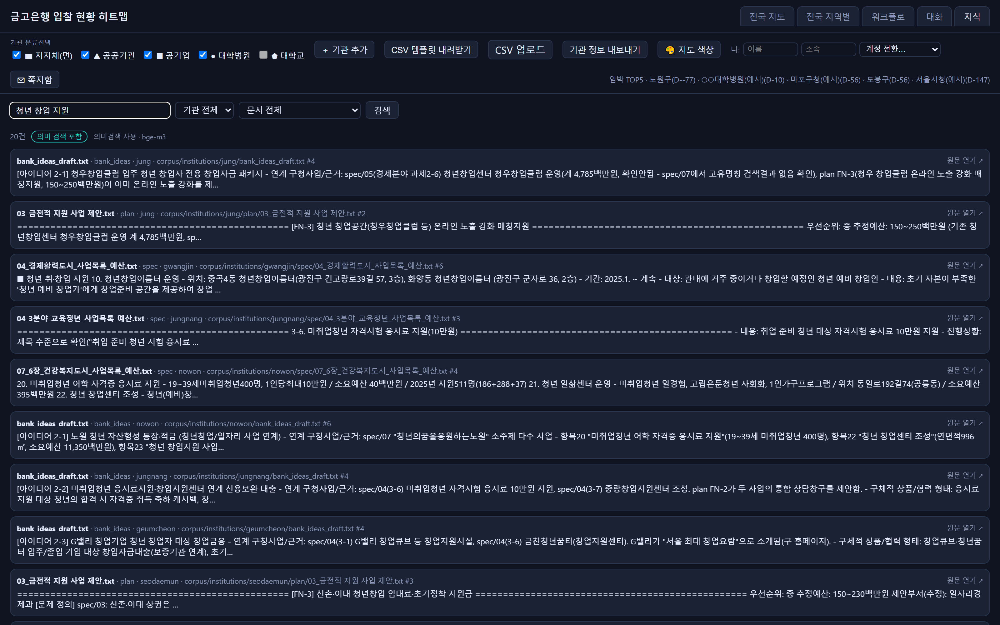
검색 결과에서 원문 전체를 그 자리에서 열고, 검색에 맞은 조각을 형광으로 짚어 줍니다.
강조 처리는 이스케이프한 문자열에만 적용해, 수집 자료 원문이 화면에서 그대로 실행되지 않도록 막았습니다.
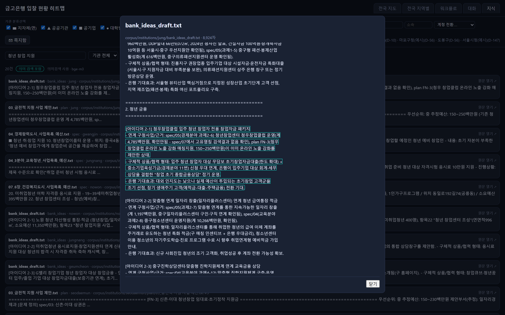
이 프로젝트의 출발점이었던 결과물입니다. 서울 5개 구청의 공개 계획문서·민원게시판을 조사해 KB가 협업할 지점을 제안하고, 그 제안을 다시 검증해 신뢰도 점수를 매긴 단일 파일 오프라인 리포트입니다.
자치구별 구금고 지정은행을 색으로 칠하고, 이번 제안 대상 5개구에만 신뢰도 점수를 표식(badge)으로 얹었습니다.
신뢰도는 제안서가 구청의 실제 계획·데이터와 얼마나 맞는지 독립 검증한 100점 만점 점수입니다.
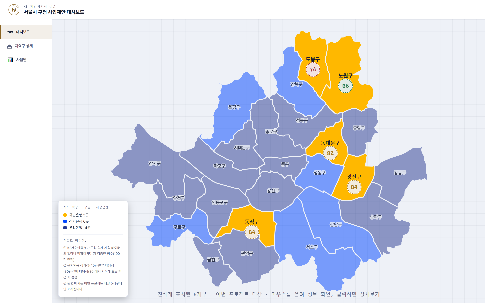
5개 구청을 카드로 놓고 제안 예산 규모(구 예산 대비 비율까지)와 조사에서 드러난 핵심 문제를 한 줄로 요약합니다.
카드를 누르면 그 구의 전체 문서로 들어갑니다.
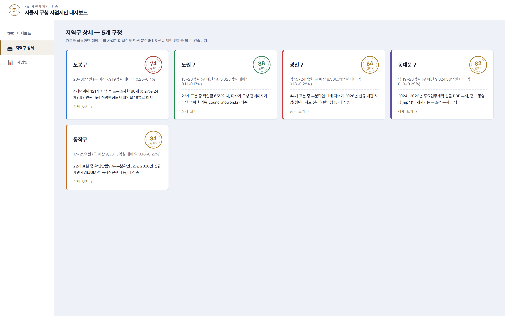
신뢰도·제안 총예산·항목 수를 지표로 세우고, 조사에서 확인된 문제 → 핵심 제안사업 → 검증 총평으로 이어집니다.
하단 9개 서브탭이 계획 → 달성도 → 민원 → KB제안 → 로드맵 → 검증의 이야기 순서로 배치돼 있습니다.
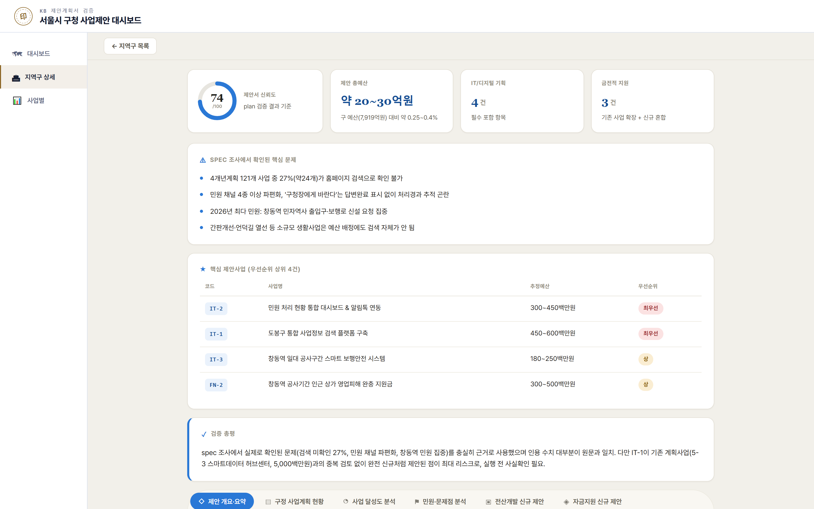
같은 주제를 5개 구청 나란히 놓고 사업명·우선순위·추정예산을 비교합니다.
주제를 바꾸면 5열이 통째로 갈려, 어느 구에 무엇을 먼저 제안할지 판단할 수 있습니다.
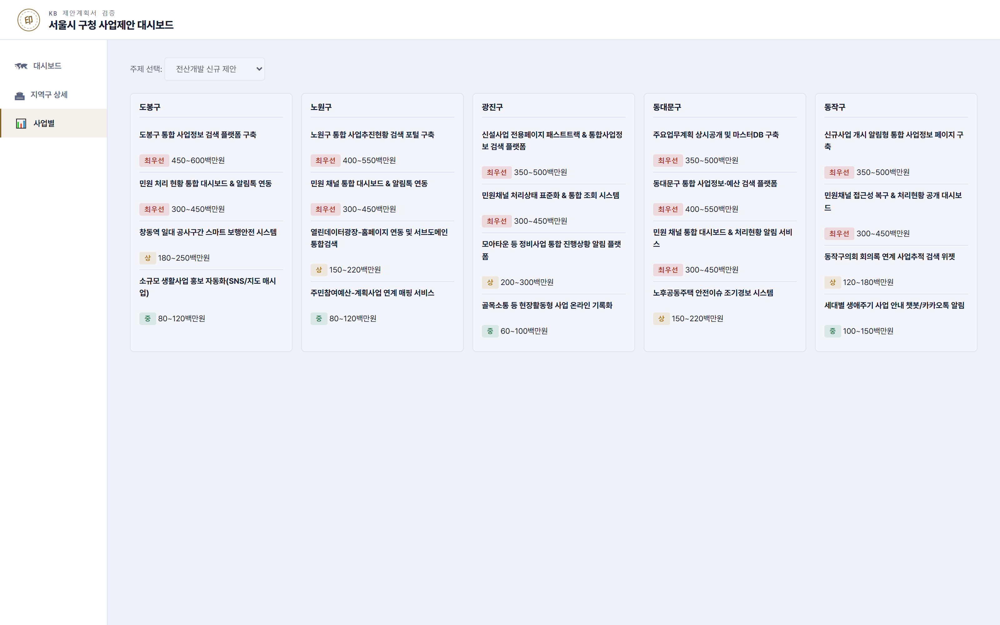
전부 폐쇄망에서 도는 것을 전제로 골랐습니다 — 외부 API·클라우드 서비스 의존이 없습니다.
| 백엔드 | FastAPI + SQLite (프로덕션 파이썬 약 8,036줄). 기관 레지스트리·워크플로 상태·메시지·알림을 한 DB에서 관리 |
|---|---|
| 에이전트 | LangGraph supervisor — 3개 팀으로 동시 분배(fan-out), interrupt()로 결재 3게이트 구현, 반려 시 의견을 재작성 프롬프트로 전달 |
| LLM | OpenAI 호환 어댑터(vLLM·Ollama·TGI 교체 가능). LLM_MODEL=auto가 하드웨어와 설치 목록을 보고 모델을 고르고, 실패 시 2순위 모델로 대체(fallback) |
| 검색 | SQLite FTS5 trigram(한글 대응) + bge-m3 임베딩 벡터를 RRF로 결합. 완료 산출물은 아카이브 시 자동 재색인 |
| 프런트 | 빌드 도구·프레임워크 없는 바닐라 JS 약 3,086줄 + D3 지도. 서버 없이 file://로도 열리는 대체(fallback) 모드 유지 |
| 망 경계 | DMZ 수집기와 폐쇄망 백엔드는 서로의 코드를 import하지 않습니다. 접점은 파일 배치(manifest.json + CSV + 첨부) 하나뿐이고, 그 경계를 테스트가 강제합니다 |
| 품질 | 백엔드 pytest 731 passed, 프런트 204 passed (커밋 9991897 기준 실측) |
py -3 -m backend.demo)를 올린 로컬 서버에 접속해 각 화면을 직접 조작하며 찍은 것으로,
목업이나 디자인 시안이 아닙니다. 화면에 보이는 업무 내용(팀 로그·쪽지·대화)은 시연용 데모 데이터이며,
그 안의 수치는 도봉구 실제 조사 자료(121개 사업, 27% 미확인, 구 예산 7,919억원 등)에서 가져와 탭 사이 이야기가 이어지도록 맞췄습니다.
LLM 연동은 별도로 로컬 Ollama llama3.1:8b에 실제 질의해 동작을 확인했습니다
— 다만 GPU 없는 CPU 환경에서는 응답 1건에 약 7분이 걸리므로, 시연은 GPU 엔드포인트를 권합니다.